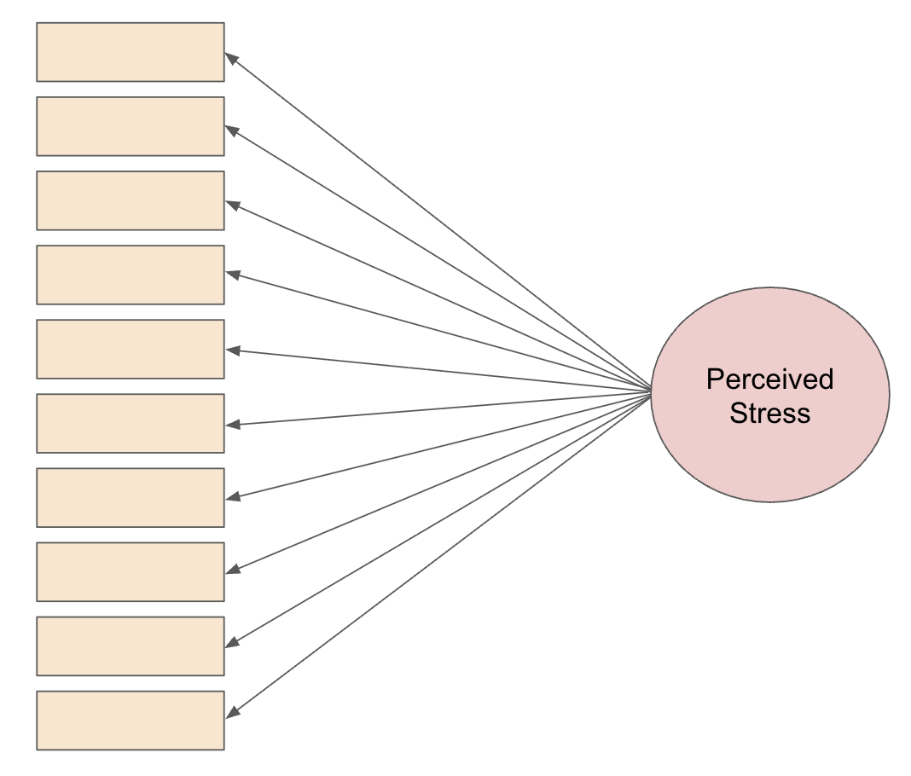
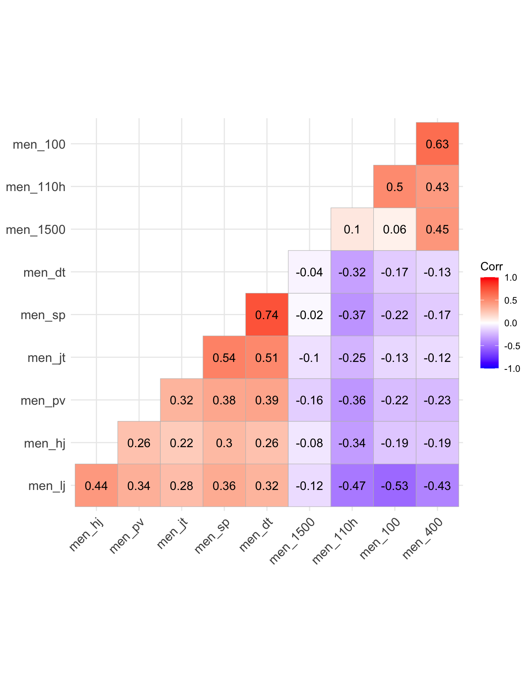
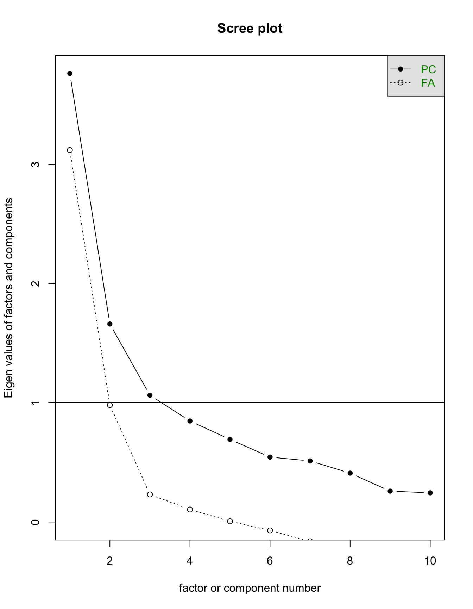
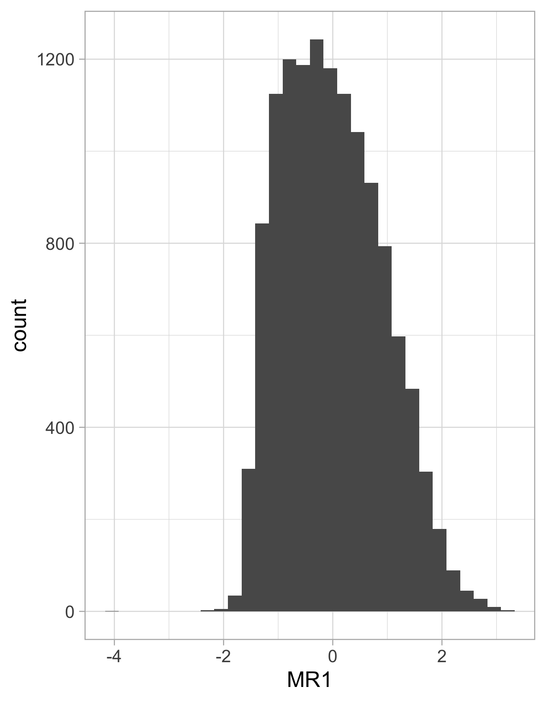

Advanced Topics: Factor Analysis
Motivation
How do we measure something we can’t directly observe? For instance, how do we measure…
Psychology: depression, negative emotion, stress, extraversion
Economics: quality of life, socioeconomic status
Sports: offensive ability, overall athletic ability
Education: mathematical knowledge, intelligence
. . .
These are known as latent variables: a hidden or unobserved variable that influences observed data.
- For example, mathematical knowledge will influence how you perform on a math test.
- No math test entirely captures mathematical knowledge
- For example, mathematical knowledge will influence how you perform on a math test.
. . .
- So far, we have been working with observed variables (e.g. blood pressure, weight, goals scored, etc.), so this poses new challenges.
Example: Perceived Stress Scale
Example: Perceived Stress Scale
Any of the items will be useful as an indicator of an individual’s current perceived state of stress.
- But none of them will completely capture an individual’s true level of perceived stress.
Thus, each item can be considered as an imperfect measure of perceived stress.
- By considering the items collectively, we can get an estimate of the individual’s underlying latent trait (perceived stress).

Overview of Factor Analysis
Dimension reduction: used to simplify the data structure by identifying a smaller number of underlying factors from the items
. . .
- In the previous example, it is commonly accepted the 10 items load onto one factor measuring perceived stress.
. . .
- Multiple factors may be needed: for example, personality is often measured by 5 factors (conscientiousness, agreebleness, extraversion, neuroticism, openness)

Overview of Factor Analysis
In creating the factors, factor analysis helps to identify items for improvement or removal because they are:
redundant (measuring the same thing as another item)
irrelevant (poorly correlated with the intended underlying constructs, causing low factor loadings)
ambiguous (cross-loading significantly on multiple factors)
Factor analysis informs the calculation of factor scores: (composite scores that combine a respondent’s scores for several related items)
These factor scores can be used for downstream analyses!
- Example: Are higher levels of perceived stress linked to greater odds of developing a clinical cold?
Factor Analysis vs PCA
PCA: finds linear combinations that explain the most total variance in variables.
- FA: Models latent (unobserved) variables that explain the shared covariance among observed variables.
. . .
PCA: components are mathematical summaries of the data.
- FA: represent underlying constructs (e.g. athletic ability, depression)
. . .
PCA: uses all variation in each variable.
- FA: separates shared variance from unique/error variance
. . .
PCA example research question: “How can we summarize 10 decathlon events with a few components that retain as much variation as possible?”
- FA asks, “Is there an underlying trait, like overall athletic ability, that explains why performances across events are correlated?”
Motivating example for today: decathlon
Decathlon is a two-day track and field competition in which athletes compete in ten specific disciplines testing speed, strength, and endurance.
. . .
Research Question: Can we use these 10 events to measure some underlying latent trait(s) about the athletes?
- Specifically, do these events wholistically measure overall athletic ability, or more specific traits (power and endurance)?
. . .
Let’s start by assuming these events reflect one factor (overall athletic ability).
Introducing model structure
Every event depends partly on both overall athletic ability and event-specific influences.
For example: \(X_{100m} = F + \varepsilon_{100m}\)
- \(X_{100m}\): 100m time
- \(F\): overall athletic ability
- \(\varepsilon_{100m}\): unexplained variance in 100m time that overall athletic ability cannot predict
Similarly, \(X_{110h} = F + \varepsilon_{110h}\)
- \(X_{110h}\): 110m high hurdles time
- \(F\): overall athletic ability
- \(\varepsilon_{110h}\): unexplained variance in 110m high hurdles time that overall athletic ability cannot predict
Introducing model structure
Overall athletic ability may be a better predictor of performance in some events than others. The loading tells us how strongly athletic ability influences performance in a particular event.
\[X_{100m} = \lambda_{100m}F+ \varepsilon_{100m}\] \[X_{110h} = \lambda_{110h}F+ \varepsilon_{110h}\]
When all observed variables and common factors are standardized to have unit variance, the loading behaves like a correlation.
Introducing model structure
\[\begin{bmatrix} x_{100mi} \\ x_{110hi} \\ \vdots \\ x_{jvi} \end{bmatrix} = \begin{bmatrix} \lambda_{100m} \\ \lambda_{110h} \\ \vdots \\ \lambda_{jv} \end{bmatrix} \begin{bmatrix} F_{1i} \end{bmatrix} + \begin{bmatrix} \varepsilon_{100mi} \\ \varepsilon_{110hi} \\ \vdots \\ \varepsilon_{jvi} \end{bmatrix}\]
Observed variables (\(\mathbf{x}_i\))
- Outcome for each observed event (for each individual)
- One row per event, one column vector per athlete
Factor loadings (\(\boldsymbol{\lambda}\))
- Strength of the relationship between each event and the latent factor
- If overall athletic ability is the factor, \(\lambda_{100m}\) will indicate how strongly 100m time is influenced by overall athletic ability
- Interpret like linear regression: represents the expected change in the observed variable for a one standard deviation increase in the latent factor \(F\)
Introducing model structure
\[\begin{bmatrix} x_{100mi} \\ x_{110hi} \\ \vdots \\ x_{jvi} \end{bmatrix} = \begin{bmatrix} \lambda_{100m} \\ \lambda_{110h} \\ \vdots \\ \lambda_{jv} \end{bmatrix} \begin{bmatrix} F_{1i} \end{bmatrix} + \begin{bmatrix} \varepsilon_{100mi} \\ \varepsilon_{110hi} \\ \vdots \\ \varepsilon_{jvi} \end{bmatrix}\]
Latent factor (\(F_{1i}\))
- Reflects level of (unobserved) overall athletic ability for every athlete i
- Every athlete has one value of \(F_1\), and the same value is used to predict all 10 event performances
- Assumed to have a linear relationship with underlying variables
Residuals (\(\boldsymbol{\varepsilon}_i\))
- Variation in each observed variable that cannot be explained by the common factor(s) in the model
- Includes event-specific ability and measurement error: for 100m, reaction time, sprint specific ability, and wind are all not captured by overall athletic ability but impact performance
Model structure: multiple factor setting
\[\begin{bmatrix} x_{100mi} \\ x_{110hi} \\ \vdots \\ x_{jvi} \end{bmatrix} = \begin{bmatrix} \lambda_{100m1}& \lambda_{100m2} \\ \lambda_{110h1} & \lambda_{110h2} \\ \vdots & \vdots \\ \lambda_{jv1} & \lambda_{jv2} \end{bmatrix} \begin{bmatrix} F_{1i} \\ F_{2i} \end{bmatrix} + \begin{bmatrix} \varepsilon_{100mi} \\ \varepsilon_{110hi} \\ \vdots \\ \varepsilon_{jvi} \end{bmatrix}\]
- Instead of one latent factor, we can specify 2+ (e.g. strength and endurance instead of overall athletic ability)
. . .
- Each observed variable can now load on multiple latent factors
- Each row of loading matrix describes how one observed variable relates to all factors.
- Each column of loading matrix describes one latent factor’s relationship with all variables.
. . .
- Residuals still represent unique variance not explained by any factor
Model structure: with mean vector
\[\begin{bmatrix} x_{100mi} \\ x_{110hi} \\ \vdots \\ x_{jvi} \end{bmatrix} = \begin{bmatrix} \mu_{100m} \\ \mu_{110h} \\ \vdots \\ \mu_{jv} \end{bmatrix} + \begin{bmatrix} \lambda_{100m1}& \lambda_{100m2} \\ \lambda_{110h1} & \lambda_{110h2} \\ \vdots & \vdots \\ \lambda_{jv1} & \lambda_{jv2} \end{bmatrix} \begin{bmatrix} F_{1i} \\ F_{2i} \end{bmatrix} + \begin{bmatrix} \varepsilon_{100mi} \\ \varepsilon_{110hi} \\ \vdots \\ \varepsilon_{jvi} \end{bmatrix}\]
By not including population mean vector \(\boldsymbol{\mu}\) on previous slides, we have assumed the observed variables have been mean-centered.
In practice, factor analysis is often performed with a standardized variable and latent factor so that
- the loadings are easy to interpret (approximately the correlation between the latent factor and variables)
- we can make statements about the proportion of variance that the factor explains
The role of covariance
Factor analysis focuses on modeling a covariance among the observed variables instead of each event independently
Covariance represents how pairs of variables change together; on the diagonal are the variances of each variable
\[\begin{bmatrix} \text{Var}(100m) & \text{Cov}(100m, 110h) & \dots & \text{Cov}(100m, jv) \\ \text{Cov}(110h, 100m) & \text{Var}(110h) & \dots & \text{Cov}(110h, jv) \\ \vdots & \vdots & \ddots & \vdots\\ \text{Cov}(\text{jv}, 100m) & \text{Cov}(jv, 110h) & \dots & \text{Var}(jv) \end{bmatrix}\]
The role of covariance
Factor analysis assumes two events should be correlated if they both depend on the latent factor (overall athletic ability)
. . .
Take the 100m and 110h:
\[X_{100m} = \lambda_{100m}F + \varepsilon_{100m}\] \[X_{110h} = \lambda_{110h}F + \varepsilon_{110h}\]
. . .
We can simplify this using two assumptions!
Factor Analysis Assumptions
- Residuals are independent of the factor: \(\text{Cov}(F_{1i}, \varepsilon_j = 0)\)
Knowing an athlete’s overall athletic ability tells us nothing about the remaining event-specific deviation.
. . .
- Residuals are uncorrelated: \(\text{Cov}(\varepsilon_i, \varepsilon_j) = 0 \quad i \ne j\)
After accounting for overall athletic ability, any remaining variation in one event doesn’t explain remaining variation in another event.
. . .
Therefore…
\[\begin{aligned} \text{Cov}(100m, 110h) &= \text{Cov}(\lambda_{100m}F, \lambda_{110h}F) + \text{Cov}(\lambda_{100m}F, \varepsilon_{110h}) + \\[3pt] & \quad \space \text{Cov}(\lambda_{110h}F, \varepsilon_{100m}) + \text{Cov}(\varepsilon_{100m}, \varepsilon_{110h}) \\[3pt] &= \text{Cov}(\lambda_{100m}F, \lambda_{110h}F) \\[3pt] &= \lambda_{100m}\lambda_{110h}\text{Cov}(F, F) \\[3pt] &= \lambda_{100m}\lambda_{110h}\text{Var}(F) \end{aligned}\]What does this mean?
We saw \(\text{Cov}({100m}, {110h}) = \lambda_{100m}\lambda_{110h}\text{Var}(F)\).
. . .
According to our one-factor model, this means that the only reason that two items are correlated is because they share the same latent factor (overall athletic ability).
. . .
- If either loading is small, \(\lambda_{100m}\lambda_{110m}\) is small, so the covariance explained by the factor is small.
. . .
- If either loading is zero, \(\text{Cov}(100m, 110h) = 0\), and the factor contributes no covariance between the two events.
. . .
If we observe correlations in the data that the factor cannot explain, that suggests our one-factor model is missing something.
For example, suppose 100m time and 110m high hurdles time are more highly correlated than our one-factor model predicts.
In addition to overall athletic ability, these events may share another underlying trait (e.g. speed).
The one-factor model cannot explain this extra correlation, so we may need to add another factor.
A little more about covariance
In matrix notation, our one factor model can be written \(\mathbf{x} = \boldsymbol{\Lambda}F + \varepsilon\)
. . .
Making the following assumptions:
- \(\text{Var}(F) = 1\),
- \(\text{Cov}(F, \varepsilon) = 0\)
- \(\text{Var}(\varepsilon) = \Psi\) where \(\Psi\) is a \(p \times p\) diagonal matrix of residual variances for \(p\) items
. . .
The covariance matrix is \[\begin{aligned} \mathbf\Sigma &= \text{Var}(\mathbf{x}) \\ &= \text{Var}(\boldsymbol{\Lambda}F + \varepsilon) \\ &= \text{Var}(\boldsymbol{\Lambda}F) + \text{Var}(\varepsilon) \quad \text{since } \text{Cov}(F, \boldsymbol\varepsilon) =0 \\ &= \boldsymbol{\Lambda}\text{Var}(F) \boldsymbol\Lambda^T + \Psi \\ &= \boldsymbol{\Lambda}\boldsymbol\Lambda^T + \Psi \\ \end{aligned}\]where \(\boldsymbol{\Lambda}\boldsymbol\Lambda^T\) represents the covariance explained by the common factor, and \(\Psi\) the unique (residual) variances for each observed variable. So \(\boldsymbol\Sigma\) = shared covariance + unique variance
Data: Decathalon data
Can we use men’s decathalon scores to give each individual a measure of overall athletic ability?
- Observed items: performance in each event
- Latent variable: overall athletic ability
library(tidyverse)
ggplot2::theme_set(ggplot2::theme_light(base_size = 20))
dec_performances <- read_csv("https://raw.githubusercontent.com/36-SURE/2026/main/data/dec_performances.csv")
decathlon <- dec_performances |>
dplyr::select(men_100, men_lj, men_sp, men_hj, men_400, men_110h, men_dt, men_pv, men_jt, men_1500) |>
separate(men_1500, into = c("min", "sec", "remove"), sep = ":", convert = TRUE) %>%
mutate(men_1500 = min * 60 + sec) %>%
select(-min, -sec, -remove) Exploring event similarities
Why are certain variables positively correlated and others negatively correlated?
round_cor_matrix <- round(cor(decathlon), 2)
library(ggcorrplot)
ggcorrplot(round_cor_matrix,
hc.order = TRUE,
type = "lower",
lab = TRUE)
Estimation
Model parameters are estimated by finding the loadings and residual variances that make the model-implied covariance matrix match the sample covariance matrix as closely as possible
- Loading matrix: determines how much covariance the latent factor creates
- Residual variance: account for variability unique to each event
. . .
- Parameters estimated by maximum-likelihood: given our observed data, which values of the loadings and residual variances make these observed data most likely?
. . .
- Assume the observed variables follow a MVN: \(\mathbf{x} \sim \mathcal N(\boldsymbol \mu , \boldsymbol\Sigma(\theta))\), where \(\boldsymbol\Sigma(\theta)\) is the model-implied covariance matrix
. . .
- Maximize the multivariate normal likelihood \(L(\theta) = \prod_{i=1}^n f(\mathbf{x}_i; \boldsymbol \mu, \boldsymbol \Sigma(\theta))\)
Fitting factor model: decathlon data
library(psych)
fit <- fa(decathlon)Check out fit and the following columns:
MR1: Factor loading; larger absolute values indicate the variable is a stronger indicator of the factor.h2: Communality; proportion of the variable’s variance explained by the common factor(s).- For a one factor model, \(h^2 = \lambda^2\)
u2: Uniqueness; proportion of the variable’s variance not explained by the common factor(s); includes specific variance and measurement error.
How many factors?
- No one way to choose!
. . .
Scree plot: uses a visual representation of the factors’ eigenvalues, which measure the amount of variance in observed variables accounted for by a given factor
Standardizing the variables means the total variance is equal to the number of predictors
For example, and eigenvalue of 3.8 means the factor explains the equivalent variance of 3.8 standardized variables.
. . .
Very simple structure (VSS): identifies a “simple” factor solution where each variable loads highly on only one factor
- Complexity 1: assumes every variable loads primarily onto one factor
- Complexity 2: variables may load onto up to 2 factors
. . .
MAP: measures how much systematic correlation remains after extracting factors
- Keep extracting factors until the remaining correlation matrix looks like random noise
. . .
- Domain knowledge is really important!
How many factors: decathlon data
scree(decathlon) #vss(decathlon)
Scree, VSS, and MAP collectively tell us we could use either 1, 2, or 3 factors. This makes leveraging domain knowledge especially important!
Factor rotation
- Rotation refers to the rotation of the axes in the coordinate system
. . .
- There are infinitely many mathematically equivalent loading matrices. Rotation chooses a solution that makes the output more understandable/interpretable.
. . .
- The chosen rotation doesn’t change model fit! It is performed after factor extraction when the covariance matrix and residuals are already determined
. . .
Note: with only one factor, rotation has no effect!
- Only one axis, so every rotation method produces the same solution (up to a possible sign change)
Types of rotations
Orthogonal rotation: rotated axes remain perpendicular, forcing factors to be uncorrelated.
Varimax is most popular orthogonal rotation: maximizes variance of squared loadings within each factor, causing each factor to have a few large loadings and many near zero.
Pros: Factors are easy interpret, better for use in downstream regression
Cons: often unrealistic
. . .
Oblique rotation: allows factors to correlate freely (e.g. depression and anxiety are correlated)
Promax/oblimin are most common oblique rotations
Pros: realistic
Cons: loading matrix can sometimes be harder to interpret, correlation in downstream regression
. . .
Specifying rotation with decathlon data
fit_varimax <- fa(decathlon, nfactors = 2, rotate = "varimax")
fit_oblimin <- fa(decathlon, nfactors = 2, rotate = "oblimin")Check out the following aspects of the output:
Do \(h2\) (communalities) and \(u2\) (uniqueness) differ between the two rotations?
What latent trait might each factor represent?
What is the correlation of the factors with oblimin? Varimax?
fit_varimax$PhiNULLfit_oblimin$Phi MR1 MR2
MR1 1.000000 -0.319056
MR2 -0.319056 1.000000Factor scores
- Once the factor model is finalized, we know parameters \(\boldsymbol\Lambda\), \(\boldsymbol \Psi\).
. . .
Factor scores estimate each individual’s level of the latent trait given their item responses
- Example interpretation: based on all 10 event performances, Athlete \(A\) is estimated to have an overall athletic ability 1.47 standard deviations above the average athlete
. . .
The most common method to extract scores is the regression estimator
Assume \(f \sim N(0,1)\), \(\varepsilon \sim \mathcal N (\textbf{0}, \boldsymbol\Psi)\)
The latent factor and items take a joint multivariate normal distribution distribution:
\[\begin{bmatrix} \mathbf{f} \\ \mathbf{x} \end{bmatrix} \sim \mathcal N \left(0, \begin{bmatrix} 1 & \boldsymbol\Lambda^T \\ \boldsymbol\Lambda & \Lambda\Lambda^T + \boldsymbol\Psi\end{bmatrix}\right)\]
. . .
Using properties of the MVN distribution, \(\hat f = \mathbb{E}[\mathbf f |\mathbf{x}] = \boldsymbol\Lambda^T(\boldsymbol\Lambda \boldsymbol\Lambda^T + \boldsymbol\Psi)^{-1}\mathbf{x}\)
- The factor scores are a weighted combination of observed variables, where items with strong loadings and strong residual variances contribute more
Extracting scores: decathlon data
fit$scores |> as.data.frame() |>
ggplot(aes(x=MR1))+
geom_histogram()
Feel free to do some exploration! How do the scores correlate with overall decathlon score? What about with the score on each event?
Using factor scores in downstream regression
- Once scores have been estimated, they can be treated as predictors or outcomes in many statistical models (e.g. linear/logistic regression, bagging/boosting algorithms, clustering)
. . .
This offers several advantages
combine multiple correlated variables into a single latent construct
reduces dimensionality and multicollinearity
often easier to interpret than analyzing many individual variables
But, be cautious of measurement error
Because factor scores are estimates (not directly observed), they contain measurement error!
Ignoring this uncertainty can lead to biased SEs and attenuated regression coefficients.
Amount of bias will depend on the reliability of the latent factor (proportion of variance explained by the factor)
- Higher loadings, smaller residual variance: less attenuation

Learn more about measurement error in regression with Alex Reinhart’s notes.
Extension: Confirmatory Factor Analysis
- When using scores in downstream regression, it is good practice to verify the measurement model (the factor model) beforehand using confirmatory factor analysis
. . .
- This lets you specify which items load on which factors, which loadings are fixed to zero, etc.
. . .
- You can also get tests of model fit (Root Mean Square Error of Approximation, Comparative Fit Index): too much to discuss these today, but happy to talk more!
Extension: Structural Equation Modeling
To prevent downstream attenuation, structural equation modeling (SEM) skips estimating the factor scores first and instead of estimates everything simultaneously.
- This propagates uncertainty is propagated throughout the estimation by estimating measurement and regression parameters together
. . .
- I’m new to this and still learning how it works mathematically and in practice!
Extension: Erin’s research w/ Weijing Tang, Phoebe Lam
In psychology, people of various backgrounds (e.g. age, sex, education) often endorse items at different rates for a given level of the latent trait. This is known as differential item functioning (DIF).
Example: With age, maybe people are more willing to say (admit) they are nervous and stressed, for a constant level of perceived stress.
Example: For a given level of underlying depression, females are significantly more likely to endorse “I cry a lot” than males.
. . .
- This poses difficulties: as the amount of DIF increases, the correlation between your latent variable and moderator (e.g. age, sex, education) increases.
. . .
Our research: demonstrates that uses traditional standardization methods in psychology in the presence of DIF and impact (true differences in underlying latent trait among groups) results in
biased regression coefficient when using scores in downstream analyses
artificially inflated or deflated corresponding confidence intervals
Extension: Erin’s research w/ Weijing Tang, Phoebe Lam
A solution to this is moderated nonlinear factor analysis (MNLFA)
Generalizes traditional latent variable models to allow for simultaneous correction of DIF over multiple background variables
Nonlinear: background variables are allowed to correct DIF in a nonlinear fashion
. . .
In short, this allows intercepts and loadings to vary by group
Intercept moderation: for a given level of depression, females cry more than males
Loading moderation: crying is a better indicator of depression in males than females
. . .
… and much more that I am happy to talk about if anyone is interested in learning more!